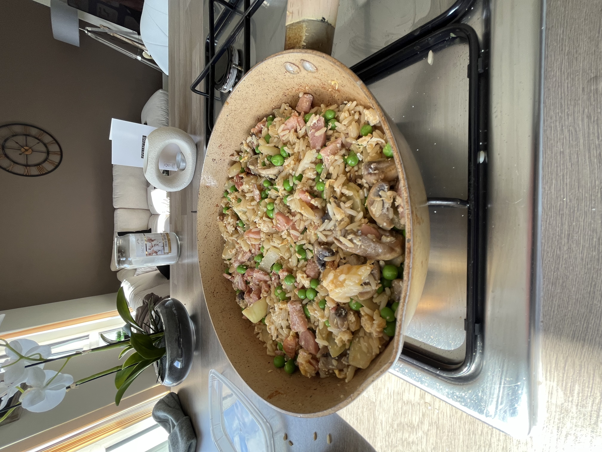

Finished Scran
Instructions
This one is quick and easy!
Get a packet of micro rice and fire it into the microwave
Get your mushrooms, onions and meat of your choice (i have chosen ham cunks from asda)
Chop your ham chunk into thin/smaller chunks.
Cook mushrooms and onions in 5ml of oil
Allow them to cook for around 3 minutes or until there is a nice brownn colour to the onions and chicken (Note: no colour no flavour so dont worry about your onions browning)
Add your rice and teryakki sauce
Then after about 30 seconds add your egg and either reduce the heat of the pan or take it off the heat to mix the egg
Add some salt for taste